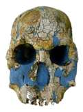
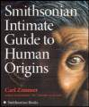

Fósseis de Hominídeos
A Evidência para a Evolução Humana
Copyright © 1996-2016 por Jim Foley[Última Atualização: 29 de fev. de 2016]
É concedida permissão para copiar e imprimir estas páginas para uso pessoal sem fins lucrativos ou educacional.
| Este site fornece uma visão geral do estudo da evolução humana e das evidências fósseis atualmente aceitas. Também contém um tratamento muito abrangente das alegações criacionistas sobre a evolução humana. Se você não tem interesse no criacionismo, pode facilmente pular essas páginas. Se tem interesse no criacionismo, pode ir diretamente para as páginas sobre argumentos criacionistas; elas contêm links aos fósseis em discussão quando necessário. | |
O que há de novo na paleoantropologia?
|
Carregando
|
O que há de novo neste site?
|
|
Sumário
|
Argumentos Criacionistas
|
O Blog Paleoantropo31 de maio de 2011: No ano passado, o primeiro rascunho do genoma do DNA nuclear de Neandertal foi publicado. Sequências genéticas de DNA mitocondrial e DNA nuclear de um osso do dedo encontrado em Denisova, na Sibéria, também foram publicadas, mostrando que o osso possuía DNA mitocondrial muito antigo, mas pertencia a um grupo irmão dos Neandertais. Fascinante, parece que os Neandertais contribuíram com cerca de 2,5% do material genético para todos os humanos modernos não-africanos, e os genes Denisovan contribuíram com cerca de 5% para os melanésios modernos. Alguns posts discutindo essas descobertas no Panda's Thumb:Intercruzamento Neandertal/humano - a resposta da Terra antiga Um Genoma Completo de Denisova, Sibéria Denisovanos e o problema das espécies
6 de maio de 2010:
No mês passado, foi anunciada a descoberta de Australopithecus sediba. Em breve, atualizarei o site para cobrir isso. Enquanto isso, confira estes artigos do Panda's Thumb: |
|
Links de Paleoantropologia |
Livros em Destaque Guia Intimo do Smithsonian sobre as Origens Humanas Uma excelente introdução pelo escritor científico Carl Zimmer |
|
Este site é atualizado regularmente. Entre em contato com o autor para correções, críticas, sugestões de novos tópicos ou feedback. Um agradecimento a todos que revisaram ou fizeram comentários nestas páginas, incluindo Randy Skelton, Marc Anderson, Mike Fisk, Tom Scharle, Ralph Holloway, Jim Oliver, Todd Koetje, Debra McKay, Jenny Hutchison, Glen Kuban, Colin Groves e Alex Duncan. Qualquer erro que permaneça é, naturalmente, meu.
|
|